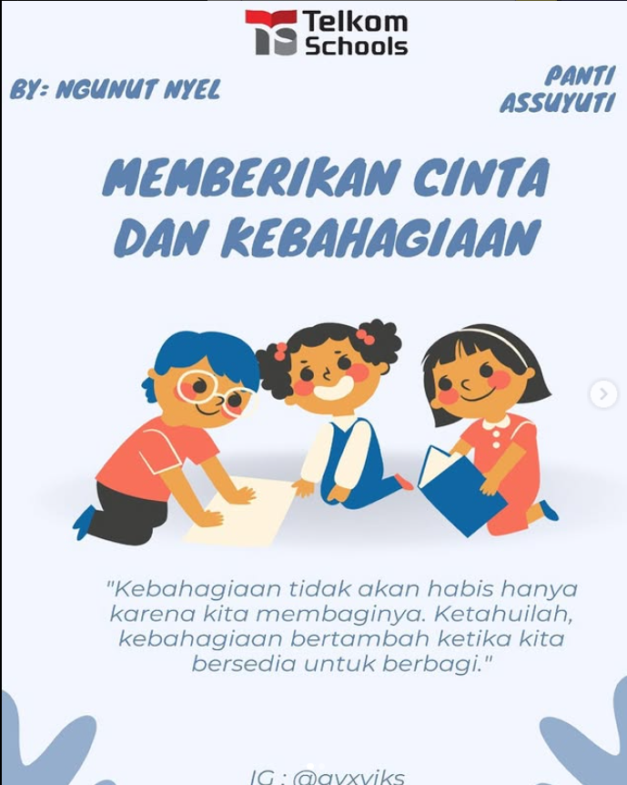
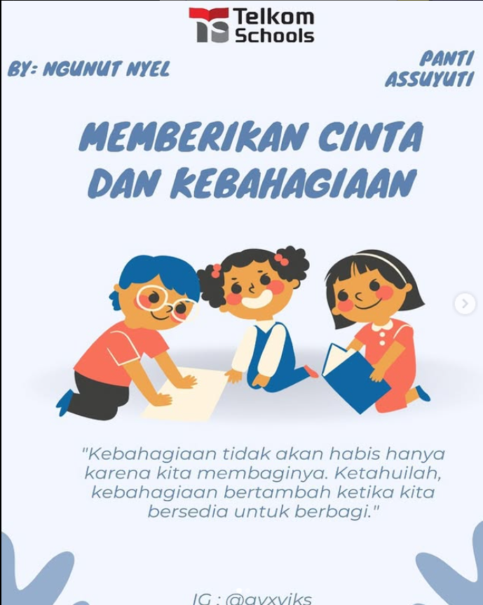

Portofolio
Promosi UMKM
Deskripsi: Proyek ini bertujuan untuk membantu mempromosikan warung makan lokal di Malang bernama Sego Sambel Cak Uut. Kegiatan ini dilakukan bersama 3 rekan, sebagai bagian dari pengembangan kemampuan digital marketing di dunia nyata. Peran Saya: Menulis caption promosi yang menarik untuk media sosial Membuat dan mengisi voice over video promosi Membantu proses editing video agar lebih menarik dan sesuai dengan branding Tools yang Digunakan: CapCut, Instagram

Poster P5
Deskripsi: Pembuatan desain grafis untuk proyek Penguatan Profil Pelajar Pancasila (P5), serta kartu ucapan Hari Raya. Desain ini digunakan sebagai media edukatif dan apresiatif di lingkungan sekolah. Peran Saya: Mendesain poster dan kartu ucapan dengan visual yang komunikatif dan estetis Menyesuaikan desain dengan tema dan nilai-nilai dari projek P5 Tools yang Digunakan: Canva
 


Promosi Sekolah
Deskripsi: Sebagai Duta Wikusama (Duta Sekolah) di SMK Telkom Malang, saya turut berperan dalam pembuatan konten promosi sekolah yang ditayangkan melalui media sosial resmi. Salah satu video menampilkan situasi yang dekat dengan kehidupan siswa—frustrasi saat mengalami error dalam coding—yang dikemas secara kreatif dan menghibur. Video ini juga berfungsi sebagai bentuk promosi tidak langsung untuk laptop Lenovo, sebagai bagian dari kerja sama antara Lenovo dan pihak sekolah. Peran Saya: Menyusun konsep dan alur cerita video Menjadi talent utama dalam konten video Berkolaborasi dalam proses produksi dan penyuntingan Tools yang Digunakan: Instagram


Akun Tugas DigiUp
Deskripsi: Dalam pelatihan DigiUp, saya mengelola akun Instagram sebagai bagian dari praktik langsung penerapan digital marketing. Kegiatan ini meliputi pembuatan konten, penjadwalan posting, dan interaksi dengan audiens. Peran Saya: Membuat konten edukatif dan promosi Merancang caption dan desain visual Meningkatkan interaksi dan daya tarik akun Tools yang Digunakan: Canva, Instagram Insight

Promosi Tidak Tersirat
Deskripsi: Kumpulan konten kreatif yang bertujuan mempromosikan sekolah secara tidak langsung (tersirat), termasuk video school tour dan partisipasi dalam ajang Putra Putri Jawa Timur 2025. Konten dibuat selama projek P5 dan merepresentasikan suasana serta nilai-nilai positif SMK Telkom Malang. Peran Saya: Membuat dan menyusun ide konten promosi tidak langsung Menjadi talent dalam video dan menarasikan kegiatan Berkontribusi pada pengambilan gambar dan editing Tools yang Digunakan: CapCut, Kamera HP, Instagram